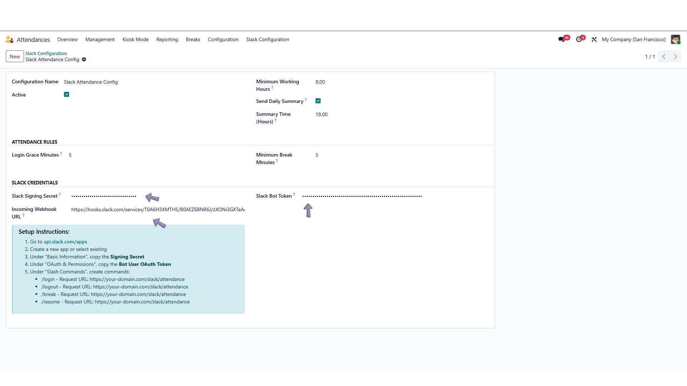
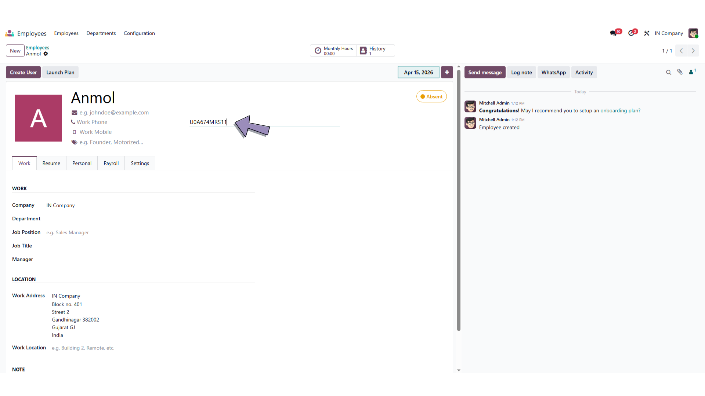
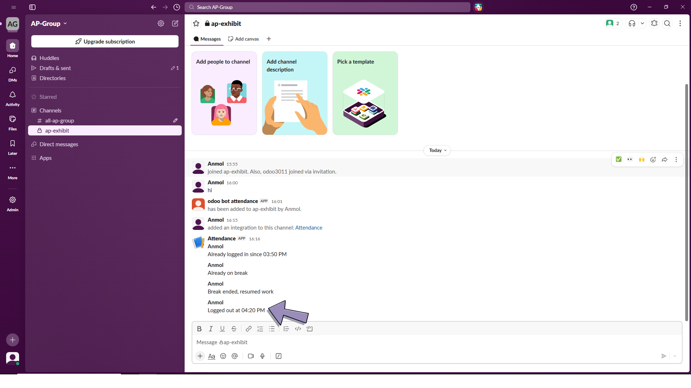
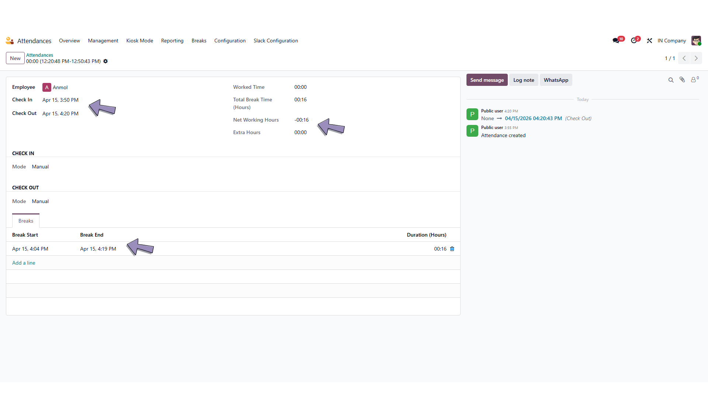
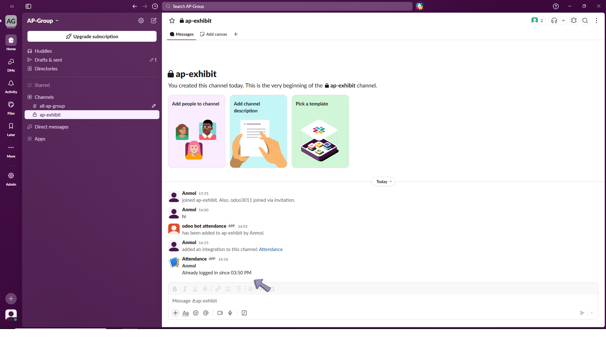
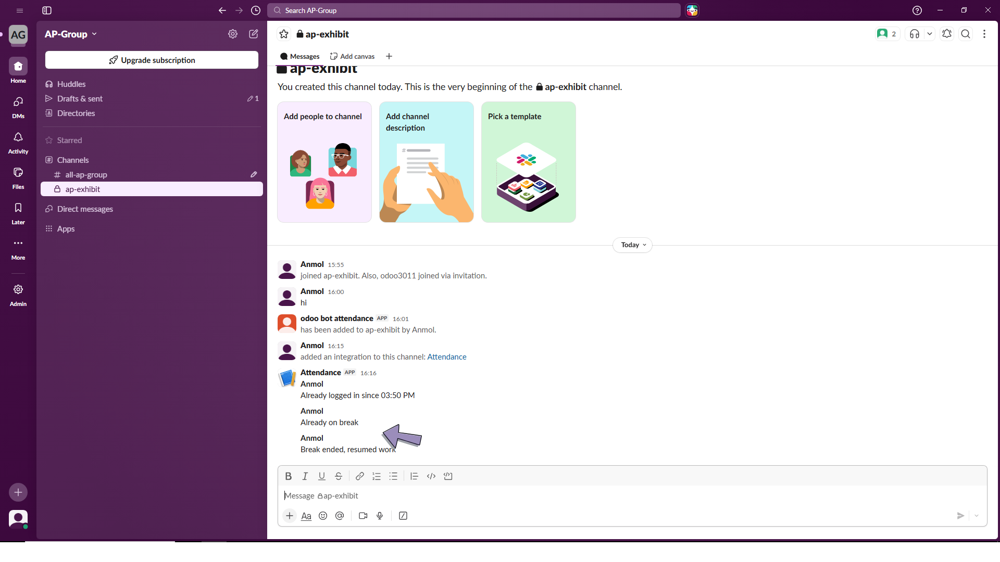

Looking for a skilled and reliable Odoo Developer to build, fix or customize your Odoo system?
Let’s build something great together! I specialize in custom module development, ERP implementation, integrations, and performance optimization.
This module allows employees to mark attendance directly from Slack using simple slash commands. It integrates seamlessly with Odoo Attendance and provides real-time tracking without opening Odoo.




/login Check-in with grace time/break Break tracking/resume Resume work/logout Check-out with net hours

You can configure module settings from Odoo: